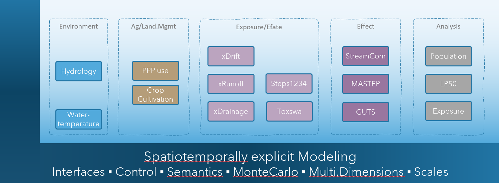

Welcome to xAquaticRisk
Welcome to the xAquaticRisk (xAR) documentation. This documentation provides an introduction and will walk new users through how to get started with the xAquaticRisk landscape model, including explanations for sample scenarios and their use for assessing aquatic risks of pesticides.
Background
Today, scientific models make a great contribution to understanding and predicting the consequences of how we cultivate the landscapes we are living in. Based on present knowledge and together with data, models have become a key instrument in decision making.
An important field is the risk assessment and management of pesticides. In Europe (and countries beyond), this includes an assessment of aquatic risk, in particular, for aquatic invertebrate populations in streams and water bodies (EFSA Aquatic Guidance). The risk assessment includes the use of models (eg, TOXSWA, GUTS) which require landscape scenarios and exposure profiles for their operation. Key information of such scenarios is the hydrological network, spray-drift deposition, and environmental fate of pesticides in surface water and sediment.
Beyond the use of xAR in a risk assessment and management context and given its modular and flexible design, xAR can be employed in a range of related research and applied topics, eg,
- landscape design and management, biodiversity enhancements
- Holistic view to risk, multiple stressors analysis, systems-based approach
- Risk Assessment Recovery Option (EFSA, Aquatic Guidance)
- Environmental Impact Reduction (EIR), eg, what if analysis, assessment and documentation of real-world EIR by new plant protection products and digital environmental safety solutions
- Aquatic ecosystem analysis: effects on macroinvertebrate communities
- Monitoring (design, insights, transfer of results to other regions and times)
- Solutions for Integrated Pest Management: improved integration of the use of chemicals and agricultural practices to reduce environmental impact, comparison of pest control options
- Specific Protection Goals: identification of driving factors of population dynamics for targeted chemical risk assessment endpoints and schemes
- Ecosystem Services (Millennium Ecosystem Assessment): improved quantitative insights into real-world Ecosystem Services for more explicit and transparent cost/benefit risk management. The work on the future of sustainable and regenerative agriculture requires improved operational instruments which allow to better understand real-world implications.
Intro
xAquaticRisk is a landscape model to simulate spray-drift deposition into surface waters, environmental fate of pesticides in stream networks, as well as exposure of and effects on aquatic invertebrate populations in space and time using real-world landscape data.
Its conceptual basis is generic and open to be used for any aquatic organism and catchment, whereas initial parameterisations and scenarios focus on macroinvertebrate species such as Asellus aquaticus, Cloeon dipterum and Gammarus pulex. xAR is based on the modular landscape modelling framework xLandscape.
Pesticide concentrations in surface water are driven by spray-drift deposition, hydrological transport from treated fields, and environmental fate processes (degradation, sorption, volatilisation). The spatial and temporal patterns of predicted environmental concentrations (PECs) in the stream network are essential information for modelling effects on aquatic organisms. Thus, dynamic exposure representation builds the basis for modelling individual-level and population-level effects.
Aquatic risk in the xAR context integrates multiple process domains: spray-drift deposition into surface waters, environmental fate in water and sediment, toxicokinetic–toxicodynamic (TKTD) modelling of individual-level effects (GUTS), population dynamics modelling (e.g., StreamCom for Asellus aquaticus), and the derivation of risk metrics such as LP50 values. In cultivated landscapes, the magnitude and pattern of aquatic exposure depend on crop types, application regimes, landscape topology, buffer zones and drift-reducing technology.
The entire process of modelling aquatic risk is of modular design. This allows, e.g., to use different environmental fate models, effect models and population models depending on the specific xAR model purpose.
Concepts and Design
Framework and Modularity
xAquaticRisk is a ready-to-use landscape model for spatiotemporally explicit modelling of aquatic risk in real-world landscapes. This requires to integrate a range of domains, information, processes and models.
xAR simulates spray-drift deposition, environmental fate of pesticides in surface water and sediment, individual-level effects using GUTS models, population-level effects using StreamCom, and derives risk metrics such as LP50 values.
Its individual functionalities are represented in modules (called components) which are integrated into the xLandscape framework (figure below). Both, the framework and the modularity make xAR flexible to adapt its present capabilities for a range of purposes: different environmental fate models, effect models, species, and basically any geographic region and extent. Eg, in case a modeller has an improved hydrological model, this can be integrated in the xAR landscape model as a new component.

xAquaticRisk landscape model. xAR is a modular composition of components using the xLandscape framework.
Components
The xAR landscape model integrates the following key components:
- XSprayDrift: a spray-drift model based on Rautmann drift values (Schmitt et al. 2020). It calculates spray-drift deposition into reaches of the hydrological network based on field-to-stream distances, application rates and drift-reducing technology.
- CascadeToxswa: a wrapping of the TOXSWA model that enables TOXSWA to be applied within a hydrological network. It simulates the environmental fate of pesticides in surface water and sediment, accounting for degradation, sorption, volatilisation and transport within the stream network.
- CmfContinuous: a cmf-based environmental fate model that simulates hydrology and substance transport in the catchment.
- StepsRiverNetwork: an environmental fate module based on Steps1234, wrapped for usage within a landscape context.
- LEffectModel: an implementation of individual-based and population-based GUTS (General Unified Threshold models of Survival) within a landscape context. Both GUTS-SD (stochastic death) and GUTS-IT (individual tolerance) model types are supported.
- StreamCom: a population model for Asellus aquaticus that simulates population dynamics including reproduction, growth and mortality within the stream network, enabling assessment of population-level recovery.
- LP50: a module that derives LP50 values (the multiplication factor applied to the application rate at which 50% lethal effects occur) within the spatio-temporal setting of the landscape model for multiple Monte Carlo runs.
- AnalysisObserver: implements default assessments of simulations, including the output of maps, plots and tables.
- ReportingObserver: reports various plots regarding hydrology, exposure, environmental fate and effects.

xAquaticRisk processing sequence. The linear sequence of modules from spray-drift deposition through environmental fate to individual and population effects.
GUTS Models
xAquaticRisk integrates GUTS (General Unified Threshold models of Survival) as the toxicokinetic–toxicodynamic (TKTD) framework for modelling individual-level effects of pesticide exposure on aquatic organisms.
GUTS models link external exposure concentrations to internal damage dynamics and survival. Two model variants are available:
- GUTS-SD (Stochastic Death): assumes a common threshold for all individuals and a stochastic killing process once the threshold is exceeded. Key parameters are the dominant rate constant, the threshold concentration and the killing rate.
- GUTS-IT (Individual Tolerance): assumes individual variation in sensitivity thresholds across a population. Key parameters are the dominant rate constant, the median threshold concentration and the width of the threshold distribution.
GUTS models have been scientifically validated and are accepted in regulatory risk assessment (see EFSA Scientific Opinion on TKTD models). In xAR, GUTS parameters can be specified for up to three species simultaneously, enabling comparative risk assessment.
StreamCom Population Model
StreamCom is a population model for Asellus aquaticus that simulates population dynamics in the stream network. It accounts for reproduction, growth, mortality and dispersal, and is coupled with the GUTS effect model to simulate population-level effects of pesticide exposure and subsequent recovery. The StreamCom component enables the assessment of population recovery following exposure events — a key endpoint in higher-tier aquatic risk assessment.
Scenarios
Scenarios represent the environmental, hydrological, agricultural management and ecological conditions. Their definition heavily depends on the problem at hand, i.e., the modelling purpose. The technical requirements for xAR scenarios, their concepts and development, as well as example scenarios are summarised in the scenarios section.
Acknowledgements
The development of the xAR landscape model was initiated by Thorsten Schad and the major development was done by Sascha Bub.
Its realisation was only possible due to the contribution of colleagues listed below and the sponsoring by Bayer AG.
| Role / Activity | Person |
|---|---|
| Idea and Initiative | Thorsten Schad |
| Goals & Requirements | Thorsten Schad, Sascha Bub |
| Design | Thorsten Schad, Sascha Bub |
| Implementation | Sascha Bub, Thorsten Schad |
| Testing | Thorsten Schad |
| Documentation | Thorsten Schad |
| Publication | Sascha Bub, Thorsten Schad |
| Analysis Modules | Thorsten Schad |
| Scenarios & Hydrology | Sebastian Multsch, Thorsten Schad, Sascha Bub |
| StreamCom | Tido Strauß |
References
EFSA Aquatic Guidance.
EFSA PPR Panel (2018). Scientific Opinion on the state of the art of Toxicokinetic/Toxicodynamic (TKTD) effect models for regulatory risk assessment of pesticides for aquatic organisms. EFSA Journal 16(8): 5377. https://doi.org/10.2903/j.efsa.2018.5377
Schmitt, W., Auteri, D., Bastiansen, F. et al. (2020). An introduction to the XAGT model ecosystem. SoftwareX 12: 100610. https://doi.org/10.1016/j.softx.2020.100610